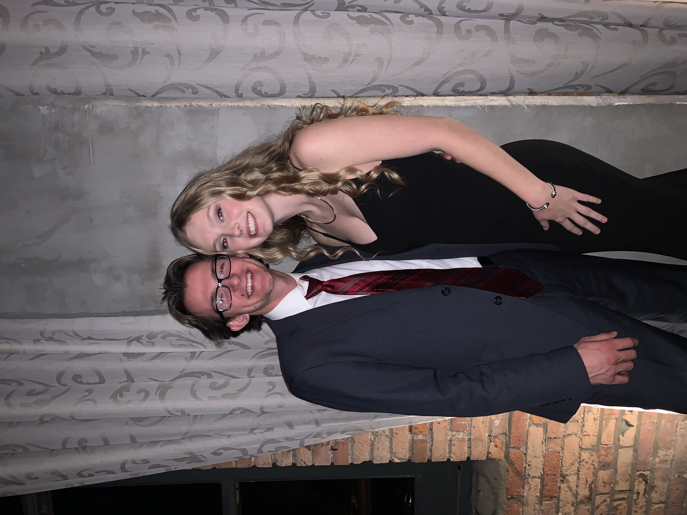

John Doll
John Doll
John Doll
This picture is of my two best friends, Mark on my left and Carson on my right. My friend Allison took this picture of us in late October.

This picture is of my family. From left to right, it goes Lauren, Chad, Kristin, Nathan, and me, John. We took this picture when I came home for Chirstmas in 2022.

This picture is of my friend Bri and me all dressed up at a wedding. We went to a wedding together over Thanksgiving for one of my friends from high school.
My name is John Doll and I'm a senior studying computer science at Miami University. I am from Wapakoneta, Ohio and will be moving to Boynton Beach, Florida after I
graduate in May. I will be doing iOS mobile application development for a lighting company called Lutron. I am very excited to move south to enjoy warmer weather and
spend some time on the beach. I am also excited to start my career and begin my life as an adult. I am looking forward to the next chapter of my life.
- My personal website
- I made this website so obviously I am fond of it. I spent a lot of time creating it sophomore year. It needs updated, I'll get to that later.
- 1 Second Everyday
- I love this app. It's a great way to keep track of your life and see how much you've changed over the years. I am now using it for my seventh year.
- Bannerweb
- Bannerweb is one of my favorite websites because it lets me register and unregister for courses. It also lets me check my graudation progress.